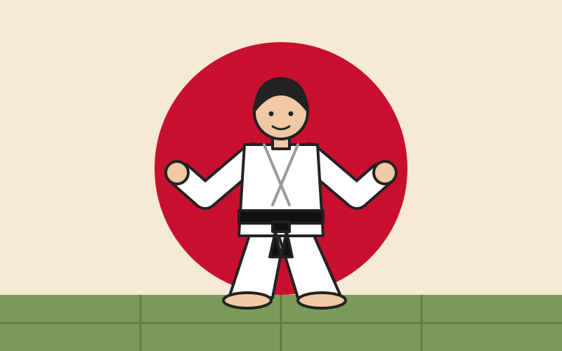

Welcome to the Dojo

About Judo
The Sport
Judo was created in Japan in 1882 by Jigoro Kano. Its name means "the gentle way". Instead of fighting strength with strength, judoka use balance, timing and leverage to throw or hold their opponent.
Belts and Respect
Students progress from white belt through the coloured belts to black belt. Every practice begins and ends with a bow, showing respect for the dojo, the teacher and training partners.
Train on Any Screen
Resize the window to see the effect
Contact
Interested in trying a class? Find a local judo club and ask for a free trial lesson.